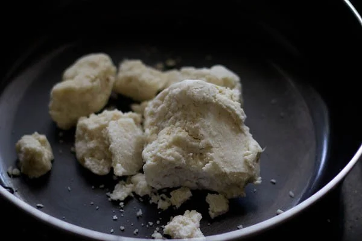
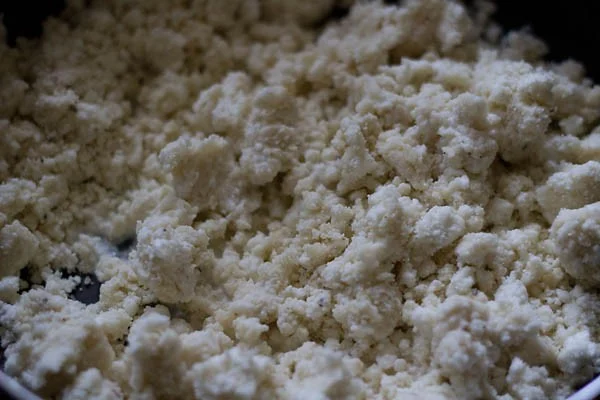
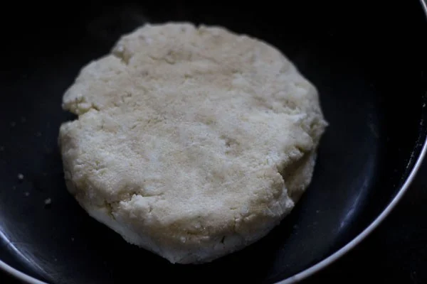
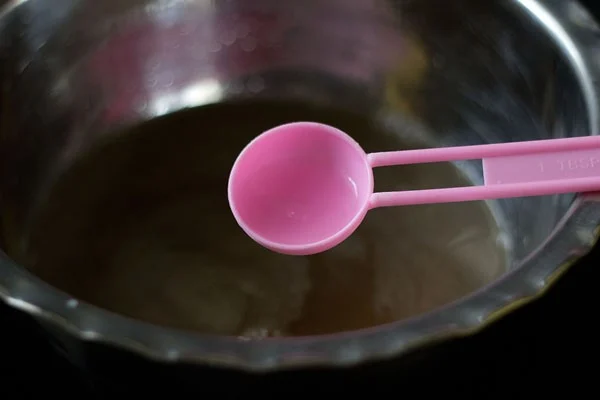
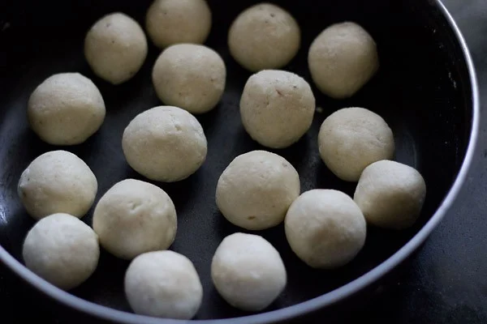
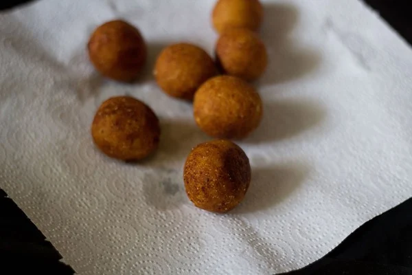
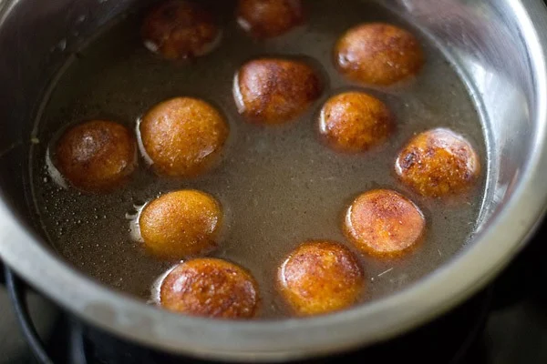
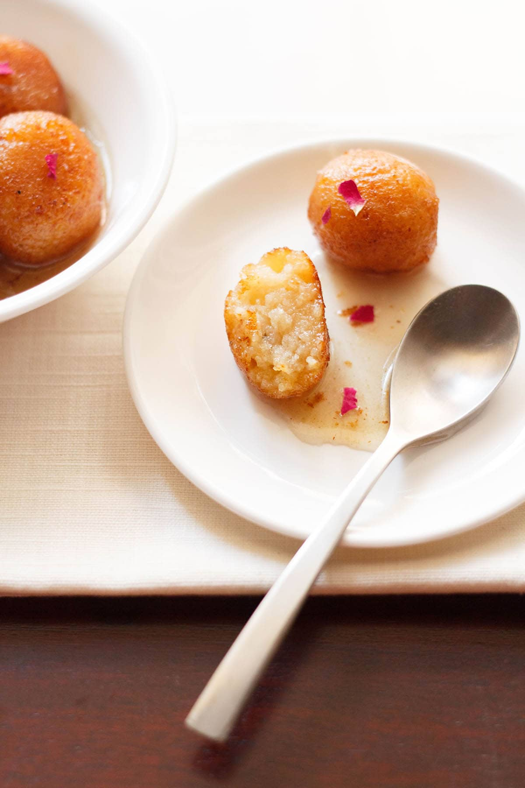

Gulab Jamun Recipe (With Khoya)
Make one of the most popular Indian sweet, Gulab Jamun! My step-by-step photo guide will help you to make these Indian treat perfectly every single time. I share the traditional method of making Gulab Jamun with Khoya (milk solids) which yields soft, rich and juicy jamuns. If you are out of Khoya, check my recipe of Milk Powder Gulab Jamun which is also easy to make.
How to Make Gulab Jamun
Make Jamun Dough
1. Take 1 cup khoya or mawa (200 grams) in a bowl. Soft khoya also known as ‘daap ka khoya’ or ‘chikna khoya’ is used. This is a soft khoya, so it mashes and kneads very well.
2. Mash khoya very well, ensuring there are no lumps or small bits lurking.
3. Then add ¾ cup (100 grams) grated paneer, 2 tablespoons fine rava (semolina), 2 tablespoons all-purpose flour, ¼ teaspoon baking powder and ½ teaspoon cardamom powder to the mashed khoya.
4. Mix well.
5. Add 1 tablespoon milk and gather together to form a dough with milk. Don’t knead, just gently mix.
If you are unable to form balls or if the mixture appears dry, then add a few teaspoons of milk and mix again. Cover the dough and set aside for 30 minutes.
Make Sugar Syrup
6. Mix 1.75 cups (250 grams) sugar in 1 cup water.
7. On a medium-low flame, heat the sugar solution till it becomes thick and sticky. Just be sure to switch off the heat before the syrup reaches a one thread consistency.
8. Add rose water and stir. Set the sugar solution aside.
Shape and Fry
9. After 30 minutes, make small balls from the dough without cracks. Cover the dough balls and set aside.
10. Heat oil until it is medium-hot. Lower the heat to a medium-low or low and wait for a minute. Then gently place a single dough ball in the oil.
11. Once the jamun start to have tiny golden spots, keep on rotating them in the oil so that the balls are evenly browned. Since I was taking the photos, I browned a few of them more.
12. Remove the fried dough balls and then place them on paper towels to remove extra oil.
Soak Jamun in Sugar Syrup
13: Place the hot fried dough balls in the sugar syrup. Continue to fry the rest of the dough balls in batches, giving them a quick drain on paper towels before adding them to the sugar syrup while they are still hot.
14. When all the gulab jamun are placed in the sugar syrup, then keep the whole pan on a low flame for 1 to 2 minutes. Heating helps the jamun to absorb the syrup and become soft.
The gulab jamun will increase a bit in size during this soaking process. Don’t overcook them, as then they can break.
Use a large enough pan so that the fried jamun balls are not overcrowded and you can easily stir them gently while they are simmering.
15. Serve gulab jamun warm or at room temperature. You can also chill them and serve them cold. Garnish them with rose petals or almond slivers. Enjoy!
